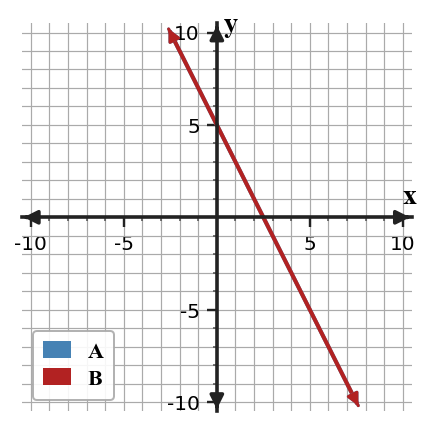

1.
The area model shows a product. Write the total area as a sum and as a product.

Practice factoring structure by identifying greatest common factors and rewriting expressions in equivalent product forms. Focus on explaining why a chosen factor fits every term.
The area model shows a product. Write the total area as a sum and as a product.
Build a factored expression that expands to $15q^2-10q+20$. Show the common factor and the remaining polynomial.
Without fully expanding every term, argue whether $8n(3n-5)+12(3n-5)$ can reasonably be rewritten as $4(3n-5)(2n+3)$. Use structure to support your conclusion.
Create a three-term polynomial with greatest common factor $6x$ such that one term is negative and the polynomial has degree $3$. Then factor it completely and explain how your example satisfies all constraints.
When a graph of a system shows one intersection point, how many ordered-pair solutions does the system have?
When elimination produces the statement $0=7$, what solution type should be reported?
The graph shows two lines labeled A and B. Estimate the slope and y-intercept of each line from the graph, then write the solution-type statement and justify it with slope/intercept language.

The graph shows lines A and B. Use at least two visible points on the displayed line(s) to decide the solution type and explain what every point on the shared graph means.

Estimate the solution before solving: $y=0.5x+1$ and $y=-x+10$. Explain why your estimate should have $x$ between $5$ and $7$, then solve by substitution to verify.
The expression $2x+3$ and the table row are supposed to match before being substituted into a second equation.
| $x$ | 0 | 1 | 2 | 3 |
|---|---|---|---|---|
| $2x+3$ | 3 | 5 | 8 | 9 |
Find the first mismatch, correct it, and explain why the error would affect a substitution solution.
The table and equation describe the same line from a system. A second line is $y=-x+11$.
| $x$ | 2 | 4 | 6 |
|---|---|---|---|
| $y$ | 3 | 5 | 7 |
Synthesize the representations by writing an equation for the table line, then solve the system with the second line.
A club is choosing between two bus companies. Company A charges \$180 plus \$6 per student. Company B charges \$90 plus \$9 per student. A draft graph labels the intersection as $(30,270)$ but the written conclusion says “Company A is always cheaper.”
An equation has the form $y=a|x-h|+k$ with $a\ne 0$. Name the family and the key point shown by the form.
Classify the family for the table and describe its symmetry evidence.
| $x$ | -2 | -1 | 0 | 1 | 2 |
|---|---|---|---|---|---|
| $y$ | 5 | 2 | 1 | 2 | 5 |
A context describes a bouncing ball whose maximum heights are multiplied by about $0.6$ after each bounce. Compare what evidence a table, graph, and equation would each show if the relationship were exponential decay.
A teammate created this mixed model: the context says a phone tree doubles each round, the table gives outputs $4,7,10,13$ for rounds $0,1,2,3$, and the equation is $y=(x-1)^2+2$. Revise the model so all three representations support one family, and explain what you changed.